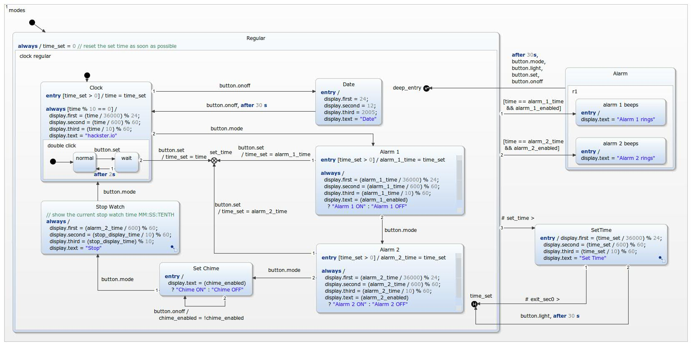

This digital watch was first designed by Harel, the founder of the Statecharts Theory. He described it in "On Visual Formalisms", published in "Communications of the ACM" in May 1988. The details of the example can be found in the platform independent example. This example focus on the integration on a Arduino combined with a 16x2 LCD Shield.

For compiling and flashing the Eclipse C++ IDE for Arduino plugin has been used. This can be found at 'https://marketplace.eclipse.org/content/eclipse-c-ide-arduino'. Please ensure that you have installed the Arduino toolchain. This can easily be done by installing the Arduino IDE, which can be found here: 'https://www.arduino.cc/en/Main/Software'. It is not possible to compile code with the Eclipse C++ IDE for Arduino plugin without an installed toolchain!
The easiest way is to use the example wizard. Required dependencies will be recoginized automatically and can be installed by clicking the "Install Dependencies.." button on the top right. Just follow the installation instructions.
After the installation of the plugin: Ensure that you have downloaded the 'Arduino AVR Boards'. You need to add them via 'Help' -> 'Arduino Downloads Manager' -> 'Platforms' -> 'Add'. For this example you also need the 'LiquidCrystal' library, which can be found using the search bar.